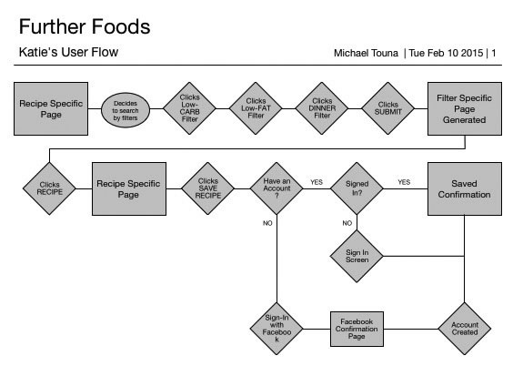
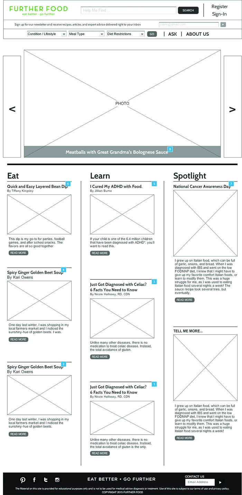

Further Food
UX Designer, Website redesign
Further Food
This young website started as a blog in Nov 2014 and grew rapidly. The goal of the website is to help people manage chronic illnesses with food and diet. It was confronted with many challenges including a high exit rate and low repeating audience. Our goal to redesign this site to fulfill the needs of the users better and engage they longer. Our UX team consisted of Scott Harris, Rose Kue, and myself.
Further Food Website
Further Food (a website helping individuals with chronic illness manage their condition through diet and food) needed a UX design team to address the high exit rate on their site and improve navigation.
Stakeholder Interview
“People think we’re just a recipe site. We are so much more.” —CEO, Further Food. We quickly found our first pain point. Our UX design team (Scott Harris, Rose Kue, and I) determined all the needs of the business up front and kept them in mind as we explored the users’ needs.Competitive Analysis
This site was unique in that it targeted a large and growing population with restricted diets. So we tackled the competitive analysis by examining recipe websites, medical sites and social media support groups. They all touched upon a different aspect of Further Food. Surveys & Interviews
Early on, we realized that this wasn’t a site about food or articles. It was a site about hope - the hope to feel better through food. Users bond through their shared conditions and the desire to stop hurting by exchanging knowledge. We also learned that users weren’t using Further Food to simply browse recipes. They were highly focused on what they wanted specifically.
Personas
Using this information, we built several personas representing the different types of users we found.
Information Architecture (IA)
Without a doubt, IA was the biggest challenge of the site. It took a lot of card sorting exercises and team brainstorming to find a new structure that provided what users really wanted from the site. This involved a complete overhaul of the site’s architecture, filtration, and global navigation. It also introduced a totally new section: an illness-specific page. This is a page that contains all the content for a given illness, since most users are only interested in seeing content for their particular condition.
Design Studio
Every section of the site was re-envisioned to create the new overall design. We wanted to reduce the exit rate of the site, so a new, more welcoming look with more engagement on every page was the main focus. We spent more than 11 hours of design studio time redesigning all the sections of the website, which included the existing pages and the new sections.

Wireframing
Building upon our design studio work, we made wireframes and got our first look at the newly proposed website. We took the personas we had created earlier in the process and walked them through several scenarios in our new wireframes. It was a great exercise for exposing gaps in any of the user flows. We reworked our wireframes and were now ready to test. 